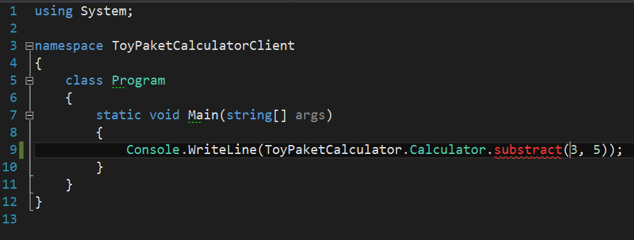

Paket workflow for testing new NuGet package before release
Modularity is becoming more and more popular nowadays. Managing separately maintained components in .NET ecosystem is usually achieved by using NuGet packages. Unfortunately with current NuGet approach, there's no easy way of testing new changes in referenced projects. Today I want to show you how we can make our lifes easier with brand new Paket feature: paket.local.
The story
Let's imagine that there's an awesome library available on NuGet.
It's called ToyPaketCalculator (link) and it allows to add or multiply two integer numbers.
The library got very popular, and everyone is now using it to perform complex calculations.
We decide to use it for our new project called CalculatorClient as well.
It works quite nicely and after a while we come up with idea for a new feature in ToyPaketCalculator.
The new feature would allow one to substract two integers.
To make the dreams come true, we want to contribute to ToyPaketCalculator, but ideally we'd like to test the new feature against our Calculatorclient application before submitting a Pull Request.
Calculator Client project
Our new CalculatorClient project will be a simple console app written in C# - create one with your favourite editor / IDE.
To pull the ToyPaketCalculator package we'll use Paket.
First, we need to download paket.bootstrapper and save it in .paket directory in the root of our codebase.
Next, we invoke a couple of paket commands from the command line (see also a list of editor plugins if not comfortable with CLI):
Download Paket
1:
|
|
Above command will download a prerelease (as of the time of writing) version of Paket, which is 3.0.0-beta and which contains the new feature described in this post.
Init Paket
1:
|
|
Init command will initialize our codebase for Paket usage, i.e. it will create a basic paket.dependencies file.
Install ToyPaketCalculator package
1:
|
|
This command will add ToyPaketCalculator package to our paket.dependencies and in interactive mode (-i flag) will ask whether we want to add the package to available projects within our codebase. Prompt to install the package to console project:
1: 2: |
|
Now we can use the package in our console app:
1: 2: 3: 4: 5: 6: 7: 8: 9: 10: 11: 12: |
|
Running this program should result in printing "8" to the console:
If we however switch add to substract, we won't be able to compile - the function is not yet implemented:

Clone ToyPaketCalculator Project
Now, in order to add the new feature to ToyPaketCalculator, we first need to pull down its sources:
1:
|
|
Solution file for this project resides in the root of the repository.
Add new feature to ToyPaketCalculator
It's usually a good practice to create separate branch per each feature we're working on.
For that reason let's open a new branch in ToyCalculatorProject:
1:
|
|
Now we're ready to implement our beloved substract function.
Turns out that the project is written in F#, but hey even if you don't know the language don't give up - it should be rather easy:
1: 2: 3: 4: 5: 6: 7: |
|
(src\ToyPaketCalculator\Library.fs)
We can commit our changes:
1:
|
|
Fine, but how can we test substract function from our CalculatorClient now?
We surely don't want end up creating a pull request only to later find out that our implementation was buggy.
Note: Normally in this case we would add appropriate automated tests to the
ToyPaketCalculatorproject to verify the behavior, however keep in mind above example is only for demonstration purposes and in practical use cases stuff might not be that easy to test in isolation, and/or we would like to test it from the referencing project anyway.
paket.local to the rescue!
Let's navigate back to our CalculatorClient project and create paket.local file with a single line:
1:
|
|
Above line stands for source override. Splliting it to parts:
nuget ToyPaketCalulatortoken identifies NuGet package that the override corresponds to,->splits the package id (left side) and actual override (right side),gitrelates to git dependency feature,file:///c:\github\ToyPaketCalculatorpoints to a local directory - place where we cloned the project,new_featureis the name of the branch to be used fromToyPaketCalculatorproject,build:"build.cmd NuGet"denotes a single-line build command, which produces a NuGet package (.nupkg),Packages: /bin/points to a directory within the referenced project where the.nupkgfile should be located afterbuild.cmd NuGetsucceeds.
Note: don't forget to add
paket.localto.gitignore- we don't want to keep track and share with other team members our local file paths!
Now when we invoke paket restore, we get the following:
1: 2: 3: 4: 5: 6: 7: |
|
In third line we can see that Paket warns us about the override.
This is to remind us that the package used during restore has been taken from a source other than the one pinned in paket.lock.
Test new feature
After successful restore with overriden ToyPaketCalculator package, we can test the new NuGet package even though it has not been released anywhere yet.
Paket handles .nupkg archive extraction for us, so all we have to do is move to the Program.cs file and invoke substract function - code should now compile just fine:
1: 2: 3: 4: 5: 6: 7: 8: 9: 10: 11: 12: |
|
Running modified program should print expected result to the output:
Create pull request / release
Now that we are confident with the change, we can create a pull request to the referenced project. In case we own the referenced project, then we can simply release new version
Note: if you have just rolled out a new project you might want to check out how releases can be a piece of cake with the cool ProjectScaffold
Hopefully the workflow I've described in this post can help .NET devs maintain their components and save plenty of time, which otherwise would be wasted on manual copying of binaries or watching failing builds on CI servers.
If you find any issue / bug in paket.local feature, please create a corresponding issue in Paket.
Below are links to github repos for both ToyPaketCalculator as well as the client project:
- https://github.com/theimowski/ToyPaketCalculator
- https://github.com/theimowski/ToyPaketCalculatorClient
Till next time!